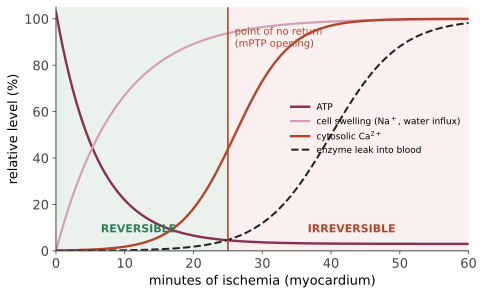

本页目录
病理 I · 细胞损伤、适应与死亡
病理学总论从这里开始。所有疾病最终都表现为细胞层面的四种反应之一：适应、可逆损伤、不可逆损伤（死亡）、以及细胞内物质蓄积。本页把这条谱系讲透，后面每一个器官的病变都是它的实例。
1. 适应：细胞对持续压力的合法反应
| 适应 | 定义 | 例 | 机制要点 |
|---|---|---|---|
| 肥大 hypertrophy | 细胞体积增大 | 运动员骨骼肌；高血压致左室肥厚；妊娠子宫 | 永久细胞只能走这条路 |
| 增生 hyperplasia | 细胞数量增多 | 肝部分切除后再生；前列腺增生；子宫内膜增生 | 仅限有增殖能力的细胞 |
| 萎缩 atrophy | 体积/数量减少 | 废用性、去神经、缺血、内分泌撤退、老年 | 泛素-蛋白酶体通路 + 自噬增强 |
| 化生 metaplasia | 一种分化细胞换成另一种 | Barrett 食管（鳞→柱）；吸烟者支气管（假复层纤毛柱→鳞） | 干细胞重新程序化 |
化生是本页最需要注意的一项：它是可逆的适应，但化生的上皮是发育异常与癌变的温床。Barrett 食管 → 腺癌；支气管鳞化 → 鳞癌。同时化生本身即代表保护功能的丧失（鳞化的支气管失去纤毛清除能力）。
发育异常 dysplasia 不是适应而是癌前病变：细胞大小形状不一、核浆比升高、核深染、分裂象增多、极性紊乱。局限于上皮内且未突破基底膜 = 原位癌（第 08 页）。
2. 可逆损伤：两个形态学标志

两个可逆改变：
- 细胞肿胀（水变性）——ATP 依赖的 Na⁺/K⁺ 泵失效 → Na⁺ 与水内流。这是最普遍的损伤反应；
- 脂肪变性（steatosis）——甘油三酯在胞内蓄积，最常见于肝（酒精、非酒精性脂肪肝、妊娠、四氯化碳）与心肌。
可逆损伤的关键判据：细胞膜完整性尚存、线粒体尚可复能。一旦膜破裂或线粒体通透性转换孔（mPTP）持续开放，就跨过了不可逆点。
3. 损伤的六大共同通路
无论起因是缺氧、毒物、感染还是免疫，最终汇聚到这几条：
- ATP 耗竭（缺氧、线粒体毒物）→ 泵失效、蛋白合成停止、糖酵解使 pH 降；
- 线粒体损伤 → mPTP 开放（膜电位崩塌）、细胞色素 c 释放 → 凋亡；
- 胞内 Ca²⁺ 升高 → 激活磷脂酶（膜破坏）、蛋白酶（骨架与膜蛋白降解）、内切酶（DNA 断裂）、ATP 酶（进一步耗 ATP）——钙是损伤的公共执行者；
- 活性氧 ROS（\(O_2^{\cdot-}\)、\(H_2O_2\)、\(OH^{\cdot}\)）→ 脂质过氧化、蛋白氧化、DNA 损伤。清除系统：SOD、过氧化氢酶、谷胱甘肽、维生素 E/C；
- 膜通透性缺陷（线粒体膜、质膜、溶酶体膜）；
- DNA 与蛋白错误折叠损伤 → p53 介导的凋亡 / 未折叠蛋白反应。
缺血-再灌注损伤是个反直觉但极重要的现象：恢复血流本身造成额外损伤——氧的重新供应使受损线粒体大量产生 ROS，中性粒细胞随血流涌入并释放酶与 ROS，补体激活。临床后果：溶栓/PCI 后的心肌顿抑、器官移植后的再灌注损伤、复苏后综合征。"救回来之后反而变差"很多时候是这个机制，不是抢救失败。
4. 细胞死亡：坏死 vs 凋亡
| 坏死 necrosis | 凋亡 apoptosis | |
|---|---|---|
| 诱因 | 病理性（缺血、毒素、感染） | 生理性或病理性 |
| 细胞体积 | 肿大 | 皱缩 |
| 细胞膜 | 破裂 | 完整，形成凋亡小体 |
| 内容物 | 外泄 → 炎症 | 被包裹 → 被吞噬，无炎症 |
| DNA | 随机降解（弥散） | 核小体间断裂（梯状条带） |
| 能量 | 不需 ATP | 需 ATP |
| 调控 | 被动 | 主动程序 |
凋亡的两条通路：
- 内源性（线粒体）：细胞内应激 → BH3-only 蛋白（Bim、Bad、Puma/Noxa 由 p53 诱导）→ 抑制 Bcl-2/Bcl-xL 并激活 Bax/Bak → 线粒体外膜通透 → 细胞色素 c 释放 → 凋亡小体（Apaf-1）→ caspase-9 → 执行 caspase-3/6/7；
- 外源性（死亡受体）：Fas/FasL、TNFR1 → FADD → caspase-8 → 执行 caspase。
临床折射：Bcl-2 过表达（滤泡性淋巴瘤的 t(14;18)）使细胞不死——"不死"而非"增殖过快"也是一种致癌机制；venetoclax 是 Bcl-2 抑制剂，直接利用了这条通路。
其他程序性死亡（近十年扩展的一块）：坏死性凋亡 necroptosis（RIPK1/RIPK3/MLKL，形态像坏死但受程序控制，促炎）、焦亡 pyroptosis（炎症小体 → caspase-1 → gasdermin D 打孔，释放 IL-1β，脓毒症的重要环节）、铁死亡 ferroptosis（铁依赖的脂质过氧化，GPX4 为关键防线）。这些是当前肿瘤与炎症治疗的热点靶点。
5. 坏死的形态学类型（要能对上器官）
| 类型 | 形态 | 典型部位/病因 |
|---|---|---|
| 凝固性坏死 | 组织轮廓保留（蛋白变性 > 酶解） | 除脑外的所有梗死：心、肾、脾 |
| 液化性坏死 | 组织液化成脓/囊腔 | 脑梗死（脂质多、支架蛋白少）、细菌感染/脓肿 |
| 干酪样坏死 | 白色豆腐渣样，镜下无定形颗粒 + 肉芽肿 | 结核；某些真菌 |
| 脂肪坏死 | 皂化，钙沉积 | 急性胰腺炎（脂肪酶外泄）、乳腺外伤 |
| 纤维素样坏死 | 血管壁嗜酸性物质沉积 | 免疫复合物血管炎、恶性高血压 |
| 坏疽 gangrene | 干性（凝固为主）/湿性（合并感染液化） | 下肢缺血、糖尿病足 |
"脑梗死为什么液化"是个好考点也是好机制题：脑组织脂质含量高、结构蛋白支架少，且小胶质细胞快速释放水解酶，因此不能维持凝固性轮廓，最终形成囊性空腔 + 胶质瘢痕。
6. 细胞内蓄积与钙化
蓄积物四类：正常成分过量（水、脂、糖原、蛋白）、异常内源性物质（代谢缺陷或折叠错误，如 α₁-抗胰蛋白酶缺乏在肝细胞内蓄积）、色素（含铁血黄素——铁过载/出血后；脂褐素——"磨损色素"，老化标志；胆红素；炭末）、外源性（炭、纹身）。
病理性钙化两型——这一对区分在影像判读中天天用到：
- 营养不良性钙化 dystrophic：血钙正常，钙沉积在已死亡或损伤的组织上。例：动脉粥样斑块、陈旧结核灶、损伤的心脏瓣膜、坏死肿瘤；
- 转移性钙化 metastatic：高钙血症导致钙沉积在正常组织中。例：甲状旁腺功能亢进、维生素 D 中毒、骨破坏性肿瘤、慢性肾病。好发于排酸组织（肾小管、肺泡隔、胃黏膜——局部碱性易沉积）。
7. 细胞老化：与损伤的关系
机制：端粒缩短（Hayflick 界限）、DNA 损伤累积、蛋白稳态失衡（自噬与蛋白酶体功能下降）、线粒体功能障碍与 ROS、衰老细胞（senescent cells）积累并分泌 SASP（衰老相关分泌表型：促炎因子、蛋白酶）。
SASP 是理解"老化即慢性炎症（inflammaging）"的枢纽，也是衰老细胞清除剂（senolytics）这一新药类别的理论基础——🔗 生命的逻辑站第 09 页有该机制的生物学全景与证据强度评估，本站不重复。
下一页：炎症与修复——身体对损伤的标准应答程序，以及为什么这个程序本身常常就是疾病。